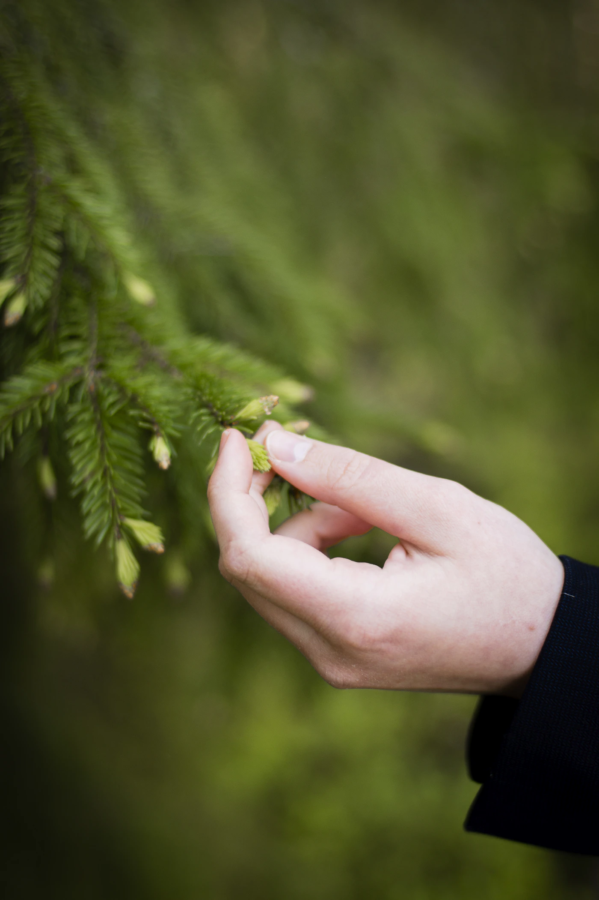

Projet de conception institutionnelle en cours d’élaboration
{{0.title}}
{{0.lead}}
Découvrir les propositions
Lecture rapide : ≈ {{readingQuick}} min Lecture complète : ≈ {{readingFull}} min
{{0.context}}

01 / Les orientations
{{1.title}}
{{1.intro}}{{1.cards}}
02 / Les responsabilités
{{2.title}}
{{2.intro}}{{2.cards}}
03 / L’intelligence artificielle
{{3.title}}
{{3.intro}}
04 / La suite du travail
{{4.title}}
{{4.intro}}{{4.cards}}
{{4.contribution}}
05 / L’origine
{{5.title}}
{{5.intro}}
06 / Participer au projet
{{6.title}}
{{6.intro}}